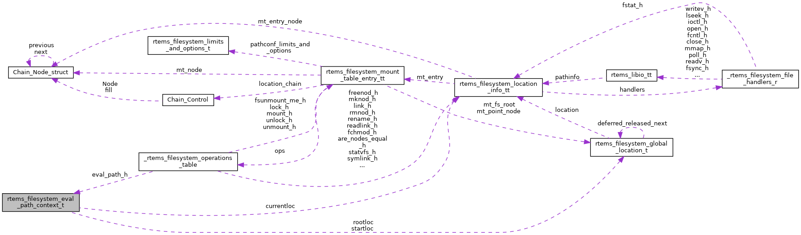

|
RTEMS
5.0.0
|
|
RTEMS
5.0.0
|
Path evaluation context. More...
#include <libio.h>

Data Fields | |
| const char * | path |
| size_t | pathlen |
| const char * | token |
| size_t | tokenlen |
| int | flags |
| int | recursionlevel |
| rtems_filesystem_location_info_t | currentloc |
| rtems_filesystem_global_location_t * | rootloc |
| rtems_filesystem_global_location_t * | startloc |
| rtems_filesystem_location_info_t rtems_filesystem_eval_path_context_t::currentloc |
This is the current file system location of the evaluation process. Tokens are evaluated with respect to the current location. The token interpretation may change the current location. The purpose of the path evaluation is to change the start location into a final current location according to the path.
Definition at line 135 of file libio.h.
Referenced by rtems_filesystem_default_eval_path(), and rtems_filesystem_eval_path_continue().
| int rtems_filesystem_eval_path_context_t::flags |
The path evaluation is controlled by the following flags
Definition at line 119 of file libio.h.
Referenced by rtems_filesystem_eval_path_start_with_root_and_current().
| const char* rtems_filesystem_eval_path_context_t::path |
The contents of the remaining path to be evaluated.
Definition at line 88 of file libio.h.
Referenced by rtems_filesystem_eval_path_eat_delimiter(), rtems_filesystem_eval_path_error(), rtems_filesystem_eval_path_recursive(), and rtems_filesystem_eval_path_start_with_root_and_current().
| size_t rtems_filesystem_eval_path_context_t::pathlen |
The length of the remaining path to be evaluated.
Definition at line 93 of file libio.h.
Referenced by rtems_filesystem_default_eval_path(), rtems_filesystem_eval_path_continue(), rtems_filesystem_eval_path_eat_delimiter(), rtems_filesystem_eval_path_error(), rtems_filesystem_eval_path_recursive(), and rtems_filesystem_eval_path_start_with_root_and_current().
| int rtems_filesystem_eval_path_context_t::recursionlevel |
Symbolic link evaluation is a recursive operation. This field helps to limit the recursion level and thus prevents a stack overflow. The recursion level is limited by RTEMS_FILESYSTEM_SYMLOOP_MAX.
Definition at line 126 of file libio.h.
Referenced by rtems_filesystem_eval_path_recursive().
| rtems_filesystem_global_location_t* rtems_filesystem_eval_path_context_t::rootloc |
| rtems_filesystem_global_location_t* rtems_filesystem_eval_path_context_t::startloc |
| const char* rtems_filesystem_eval_path_context_t::token |
The contents of the token to be evaluated with respect to the current location.
Definition at line 99 of file libio.h.
Referenced by rtems_filesystem_eval_path_error().
| size_t rtems_filesystem_eval_path_context_t::tokenlen |
The length of the token to be evaluated with respect to the current location.
Definition at line 105 of file libio.h.
Referenced by rtems_filesystem_eval_path_error().
 1.8.17
1.8.17